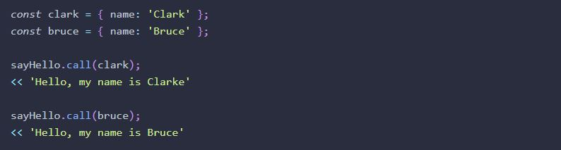
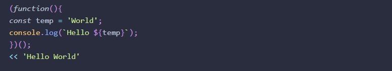
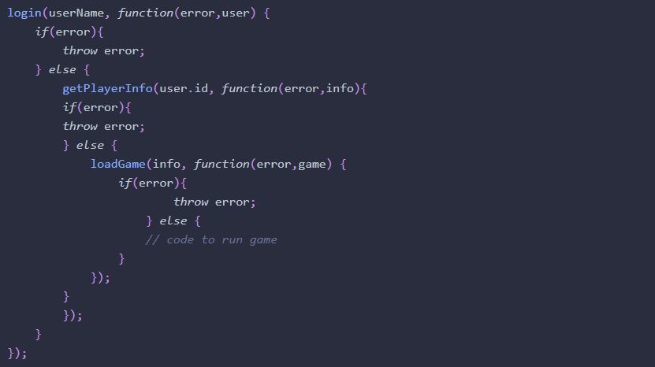

WDD 330: Portfolio Week 7
My Notes:
Chapter 11: Further Functions from "JavaScript: Novice to Ninja"
Function Properties and Methods
Functions are called first -class objects because they can have their own properties and methods.
-
The call() method can be used to set the value of this inside a function to an object that is provided as the first argument.
Nevertheless, If a function doesn’t have the value this , then you will need to provide nullas its first argument.

-
The apply() method. This is the same as the call() method except that it uses an array as argument.
-
The description property. This can be added to describe what the function does.
square.description = 'Squares a number that is provided as an argument' << 'Squares a number that is provided as an argument' -
Memoization.This feature is used to save teh result in a cache property. This way, the function wouldn't need to calculate an operation again.
function square(x){ square.cache = square.cache || {}; if (!square.cache[x]) { square.cache[x] = x*x; } return square.cache[x] } square(3); << 9 square(-11); << 121 square.cache; << {"3": 9, "-11": 121}
Immediately Invoked Function Expressions, IIFE
-
IIFE.This function if invoked upon definition. For this, you will need to place parentheses as in:
 -
Temporary Variables. Because you cannot remove a variable from a scope once it's declared, we can place a code inside an IIFE to ensure that it's available when the IIFE is invoked as in:
let a = 1; let b = 2; (()=>{ const temp = a; a = b; b = temp; })(); a; << 2 b; << 1 console.log(temp); << Error: "temp is not defined" -
Initialization Code. Because the code is only run once, there’s no need to create any reusable, named functions, and all the variables will also be temporary
Functions that Define and Rewrite Themselves
in JavaScript, Function can call itself, define itself, and rewrite itself.
-
Lazy Definition Pattern is often used when some initialization code is required the first time it’s invoked. For example:
function party() { console.log('Wow this is amazing!'); party = function(){ console.log('Been there, got the T-Shirt'); } } party.music = 'Classical Jazz'; // set a property of the function party(); << "Wow this is amazing!" party.music; // function has now been redefined, so the property doesn't exist << undefined -
Init-Time Branching. Once used, this technique enables the functions to work more effectively in the browser, and avoid checking for features every time they’re invoked.
An if/else statement can also be used to determine which way the function should be written. This can be a useful pattern to initialize functions the first time they’re called, optimizing them for the browser being used
Recursive Functions
A recursive function is one that invokes itself until a certain condition is met. It’s a useful tool to use when iterative processes are involved. An example is that of the factorial function of a number as in:
function factorial(n) {
if (n === 0) {
return 1;
} else {
return n * factorial(n - 1);
}
}
Callbacks
Callbacks are functions passed to other functions as arguments and then invoked inside the function they are passed to. See example below:
function wait(message, callback, seconds){
setTimeout(callback,seconds * 1000);
console.log(message);
}
//This is how to create a callback function about the above.
function selfDestruct(){
console.log('BOOOOM!');
}
// Now as we invoke the wait() function, JavaScript will work asynchronously:
wait('This tape will self-destruct in five seconds ... ', selfDestruct, 5);
console.log('Hmmm, should I accept this mission or not ... ?');
<< 'This tape will self-destruct in five seconds ... '
<< 'Hmmm, should I accept this mission or not ... ? '
<< 'BOOOOM!'
Callback Hell
-
A Callback hell is the term used to refer to this tangled mess of code.

Promises
- A promise represents the future result of an asynchronous operation.
- A promise is a placeholder for the result of an asynchronous operation
Life Cycle of a promise
-
Pending: this is the first status. It indicates the underlying operation has not completed. A promise will always have a pending status at some point in its life cycle.
-
Resolved or Fulfilled: his status indicates that the underlying operation has successfully completed.
-
Rejected: this status indicates that the underlying operation did not complete. This may be due to a bug, network issue, etc.
When a promise is created, it calls an asynchronous operation and is then said to be pending.
A promise can have the following outcomes
How to create a promise
A promise is create using a constructor function by taking a function called an executor as argument.
Here is the general layout of a promise:
const promise = new Promise( (resolve, reject) => {
// initialization code goes here
if (success) {
resolve(value);
} else {
reject(error);
}
});
Dealing With A Settled Promise
- The then() method. This method is used to deal with the outcome.
promise.then( result => console.log(`Yes! I rolled a ${result}`), result => console.log(`Drat!
... I rolled a ${result}`) );
promise.catch( result => console.log(`Drat! ... I rolled a ${result}`));
Example: The following code illustrates the behavior of a promise operation
const dice = {
sides: 6,
roll() {
return Math.floor(this.sides * Math.random()) + 1;
}
}
console.log('Before the roll');
const roll = new Promise( (resolve,reject) => {
const n = dice.roll();
if(n > 1){
setTimeout(()=>{resolve(n)},n*200);
} else {
setTimeout(()=>reject(n),n*200);
}
});
roll.then(result => console.log(`I rolled a ${result}`) )
.catch(result => console.log(`Drat! ... I rolled a ${result}`) );
console.log('After the roll')
// Possible outcome:
before promise
promise pending...
after promise
Other information about promise operations
- Chaining Multiple Promises: This is used by chaining the then() methods together to form a sequential code that is easy to read.
-
Async Functions: It is achieved by using the await operator before an asynchronous function.
async function loadGame(userName) { try { const user = await login(userName); const info = await getPlayerInfo (user.id); // load the game using the returned info } catch (error){ throw error; } } -
Generalized Functions: Callbacks can be used to build more generalized functions.
function random(a,b=1) { // if only 1 argument is provided, we need to swap the values of a and b if (b === 1) { [a,b] = [b,a]; } return Math.floor((b-a+1) * Math.random()) + a; } random(6); << 4 random(10,20); << 13 -
Functions That Return Functions : Functions can accept another function; they can also return another function when invoked.
Closures
-
In JavaScript, a closure is a function that references variables in the outer scope from its inner scope. The closure preserves the outer scope inside its inner scope.
To find more about Closures, Please click here "Javascript Closures"
Chapter 13: AJAX from "JavaScript: Novice to Ninja"
AJAX
Ajax is a technique that allows web pages to communicate asynchronously with a server, and it dynamically updates web pages without reloading.
A Brief History of Ajax
The term “Ajax” was coined by Jesse James Garrett in 2005 in the article “Ajax: A New Approach to Web Applications,” where he referred to techniques being used by Google in its recent web applications. Asynchoronous loading were noticed when Google launched Gmail and Google Maps features in 2004 and 2005. These web applications used asynchronous loading techniques to enhance the user experience by changing the parts of the page without a full refresh.
| Asynchronous | When a request for data is sent, the program doesn’t have to stop and wait for the response. It can carry on running, waiting for an event to fire when a response is received. By using callbacks to manage this, programs are able to run in an efficient way, avoiding lag as data is transferred back and forth. |
| JavaScript | JavaScript was always considered a front-end language, not used to communicate with the server. Ajax enabled JavaScript to send requests and receive responses from a server, allowing content to be updated in real time. |
| XML | When the term Ajax was originally coined, XML documents were often used to return data. Many different types of data can be sent, but by far the most commonly used in Ajax nowadays is JSON, which is more lightweight and easier to parse than XML. (Although it has never really taken off, the termAjaj is sometimes used to describe the technique.) JSON also has the advantage of being natively supported in JavaScript, so you can deal with JavaScript objects rather than having to parse XML files using DOM methods. |
API
An application programming interface (API) is a collection of methods that allows external access to another program or service. Many websites allow controlled access to their data via public APIs. This means that developers are able to interact with the data and create mashups of third-party services
The Fetch API
The Fetch API provides a global fetch() method that only has one mandatory argument, which is the URL of the resource you wish to fetch.
fetch('https://example.com/data')
.then( // code that handles the response )
.catch( // code that runs if the server returns an error )
Response Interface
The Fetch API introduced the Response interface that deals with the object that’s returned when the promise is fulfilled. Response objects have a number of properties and methods that allow us to process the response effectively.
Other Properties of the Response Object| headers | A Headers object (see later section) containing any headers associated with the response |
| url | A string containing the URL of response |
| redirected | A boolean value that specifies if the response is the result of a redirect |
| type | A string value of 'basic', 'cors', 'error' or 'opaque' |
FormData
The Fetch API includes the FormData interface, which makes it much easier to submit information in forms using Ajax. A FormData instance is created using a constructor function:
const data = new FormData();
Example of a FormData used in main.js
const form = document.forms['todo'];
form.addEventListener('submit', addTask, false);
function addTask(event) {
event.preventDefault();
const task = new FormData(form);
const url = `http://echo.jsontest.com/id/1/title/${form.task.value}`;
const headers = new Headers({
'Accept': 'application/json',
'Content-Type': 'application/json'
});
const request = new Request(url,
{
method: 'POST',
mode: 'cors',
header: headers,
body: JSON.stringify(task)
}
)
fetch(request)
.then( response => response.json() )
.then( data => console.log(`${data.title} saved with an id of ${data.id}`) )
.catch( error => console.log('There was an error:', error))
}
The Fetch API AS A Living Standard
The Fetch API is also known as a 'living standard', which means that the specification is being developed 'in the wild'. This means that, despite it being available to use, it’s still subject to change as developers, browser vendors and end-users provide feedback about how it works.
Team Activity & Ninja Quiz Practice
Click in the links below to find this week team activity and practice exercise.
Ajax ExampleChapter 13 AJAX Quiz Ninja
Week 07 Team Activity
Question:
- Is the Fetch API the recommended standard? If not, would there be a better version to get JSON data/API data to work more effectively?
- Should static method only be used when working with classes?